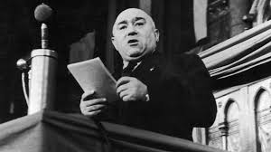

Rákosi Mátyás
1947 után egyre inkább úrrá lett rajta a megalománia, s lassanként a hatalom rabjává vált. Pozícióinak megszilárdítására minden eszközt használhatónak ítélt meg.
-
1892
Született
-
1971
Meghalt
Rajk László
Kommunista politikus, miniszter, 1945 után belügyminiszterként a Rákosi-diktatúra és terror kiépítésének fontos szereplője, 1948-tól külügyminiszter.
-
1909
Született
-
1949
Meghalt

Nagy Imre
magyar kommunista politikus, gazdaságpolitikus, egyetemi tanár, a Magyar Tudományos Akadémia rendes tagja. Az 1956-os forradalom alatt a Minisztertanács elnöke.
-
1896
Született
-
1958
Meghalt